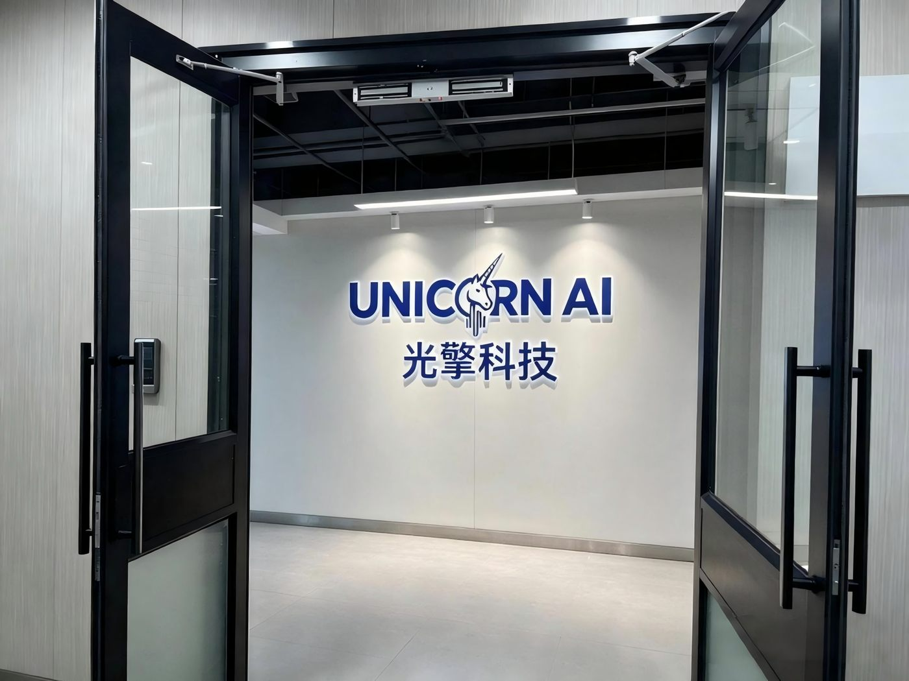
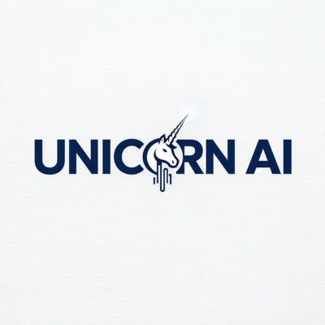
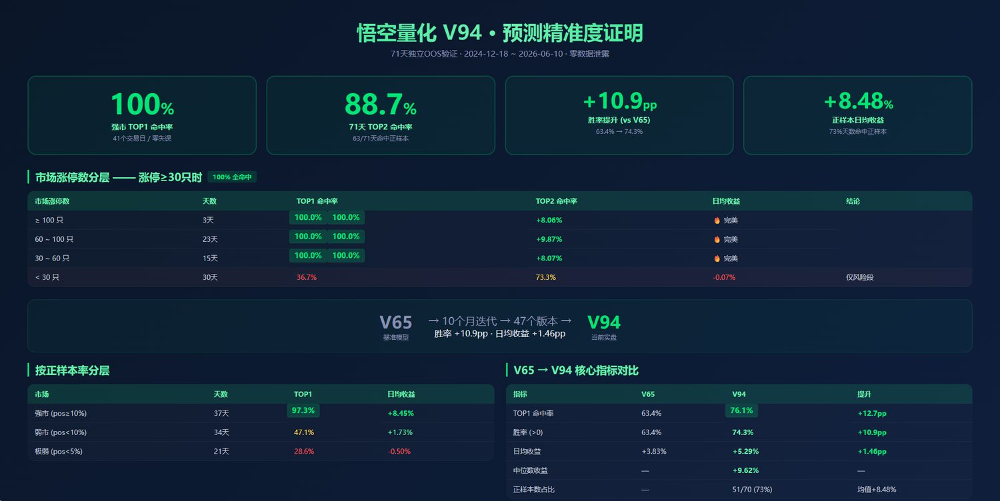
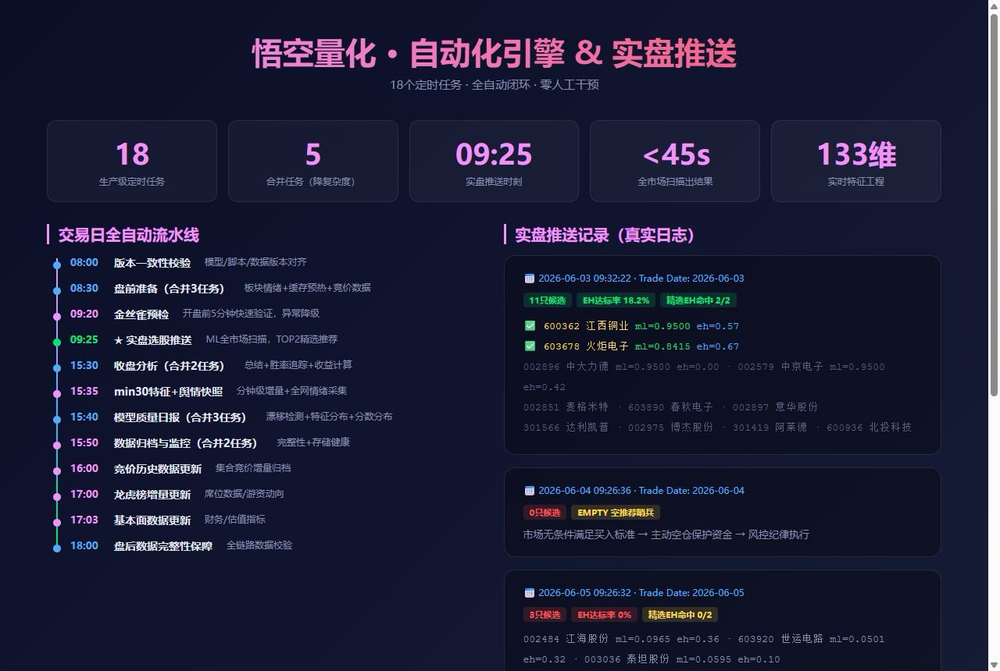
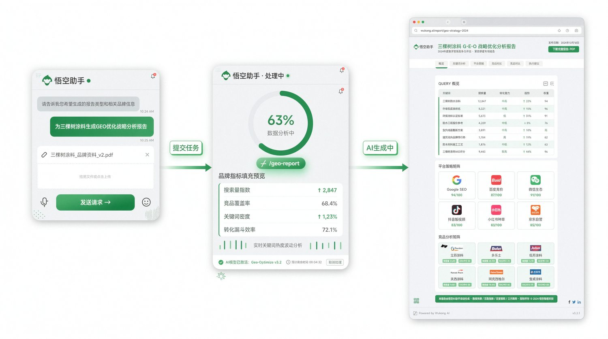
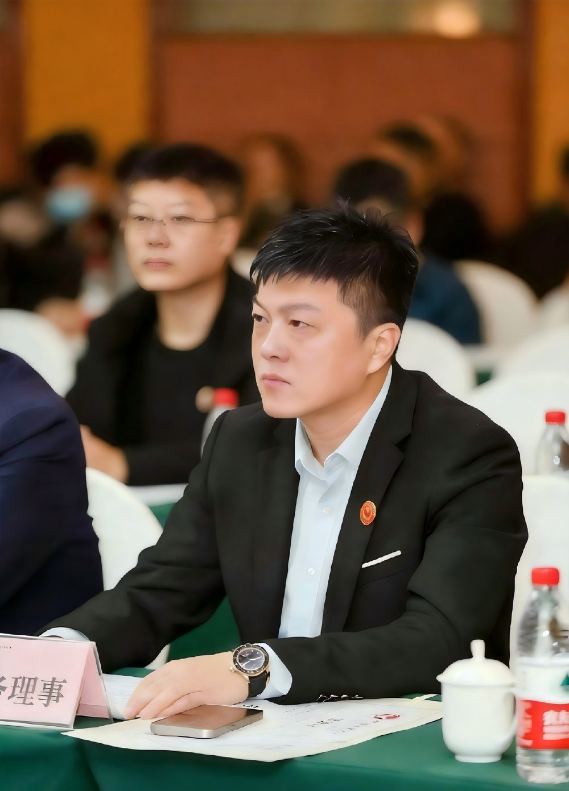

山东光擎智能科技以千问办公为核心工具，在量化选股、策略迭代、数据沉淀等核心场景完成系统性AI落地，将传统依赖个人经验的投资模式升级为AI辅助的智能决策。


山东光擎智能科技有限公司成立于2025年，是一家专注于智能控制系统集成、人工智能行业应用系统集成的创新企业。公司核心团队来自金融量化、人工智能等领域，致力于将AI技术与金融投资深度融合，探索高价值AI应用场景。
公司主营业务涵盖两大板块：一是面向GEO技术服务，通过智能自动化引擎+千问大模型构建自动化内容生成体系；二是面向AI量化投资工具研发，基于千问办公智能体平台，实现从策略设计到实盘推送的全流程AI化。
山东光擎智能科技以千问办公为核心工具，在量化选股、策略迭代、数据沉淀等核心场景完成系统性AI落地。公司围绕量化交易、策略管理等模块系统构建Skill技能，实现60天80+版本快速迭代，将传统依赖个人经验的投资模式升级为AI辅助的智能决策。




AI 真正的价值，不在于替你做完一件小事，而在于成为你业务的"决策外脑"。在这个所有人都不确定的AI混沌期，谁能把一个高价值的应用场景真正跑通，谁就握住了无限的可能。